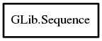

Sequence
Object Hierarchy:

Description:
[ Compact ]
public class Sequence<G>
The Sequence struct is an opaque data type representing a sequence data type.
Content:
Static methods:
- public static void foreach_range (SequenceIter<G> begin, SequenceIter<G> end, Func<G> func)
- public static SequenceIter<G> insert_before (SequenceIter<G> iter, owned G data)
- public static void move (SequenceIter<G> src, SequenceIter<G> dest)
- public static void swap (SequenceIter<G> src, SequenceIter<G> dest)
- public static void sort_changed (SequenceIter<G> iter, CompareDataFunc<G> cmp_func)
- public static void sort_changed_iter (SequenceIter<G> iter, SequenceIterCompareFunc<G> iter_cmp)
- public static void remove (SequenceIter<G> iter)
- public static void remove_range (SequenceIter<G> begin, SequenceIter<G> end)
- public static void move_range (SequenceIter<G> dest, SequenceIter<G> begin, SequenceIter<G> end)
- public static weak G @get (SequenceIter<G> iter)
- public static void @set (SequenceIter<G> iter, owned G data)
- public static SequenceIter<G> range_get_midpoint (SequenceIter<G> begin, SequenceIter<G> end)
Creation methods:
Methods: